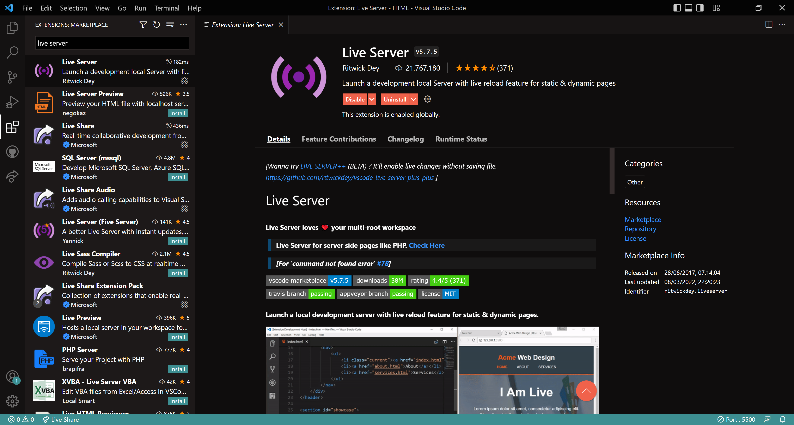
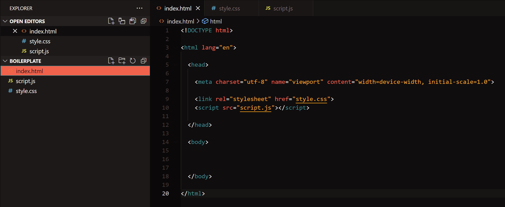
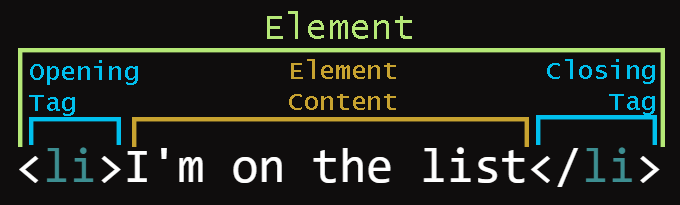
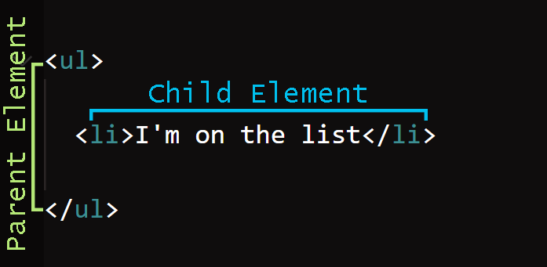
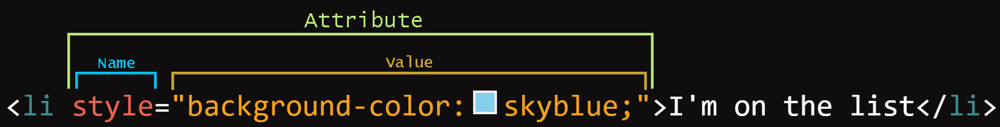

All you need to write HTML, CSS and JavaScript is a text editor - not a rich-text formatting program like Word, but TextEdit or Notepad will work.
This semester we will be using VSCode, which is free and cross-platform.
You should add an extension that will run your HTML pages locally in your browser of choice - Live Server in VSCode, which can be easily found on the extension marketplace.

Browsers? Firefox all the way, but you're going to need to get used to using all of them for testing purposes.
A good way to understand how others create websites is to view both the website and the code used to create it at the same time. We'll cover how
to do this for online websites but while we introduce HTML, CSS & JavaScript there'll be worksheets like this where you're able to switch back and
forth between the source code in VS Code and the page it generates in the web browser.
To get started on a coding session like we'll be doing in class first open the website's folder using VS Code - careful not to use the open file command by accident.
Once it has loaded the folder and you can see the correct files in the explorer to the left you'll need to press the go live button in the bottom right corner of the window
- this should open your web page in your default browser. While you can directly open a HTML file I strongly recommend using Live Server as it'll automatically update the
browser page when you save your code.
Boilerplate Code

The boilerplate code above, which we set up together last week, creates the basic structure for a web page.
The <!DOCTYPE html> tag tells browsers that the document (name for a HTML file) contains code written in HTML.
The <html> tag specifies where our HTML starts and stops - notice the tag is 'closed' with a </html> tag at the end of the document - the forward
slash indicates a closing tag. Not all tags need to be closed in this way but most do as it allows us to put other tags or text inside of them which we'll see below.
The <head> tag specifies a section of code to be loaded before the rest of the page - the browser loads tags in the order you write them, top to
bottom, left to right. The head element is used as a container for metadata (see the
<meta> tag below) which is not directly displayed on the web page. It's also quite common to import other code files or assets in the <head> through
the use of the <link> and <script> tags, something we'll discuss in more detail in the next few weeks.
Each HTML document should only ever include one instance of the <head> tag.
The <meta> tag is used to add additional information about the web page, which in our case means defining the character set or charset used by the
HTML (UTF-8 is pretty standard), as well as details of the 'viewport' that will help us make our site responsive
for mobile devices later.
The <title> tag specifies the title of the page in the browser tab above the webpage itself - for example 'HTML Basics' on this page.
Task: Open the boilerplate folder from last week and add in a <title> tag with whatever title you like inside of the <head> tag. If you're having
difficulty getting it to work check the <head> tag from the code for this page for an example.
The <body> tag specifies the information to display on the page itself and is where most of your HTML code will go.
Each HTML document should only ever include one instance of the <body> tag.
HTML Elements
HTML tags are used to define HTML elements which act as containers for your web page's information. A HTML element refers to both the start tag and end tag as well as anything
placed inside of it, as shown below.

HTML elements can also be placed inside other HTML elements - this is called nesting. The outside element in this relationship is called the parent and it will pass
on certain information down to the element contained inside it which is called the child.

This is why HTML elements are thought of as containers - sometimes they are used to contain content like words or picture, sometimes they are used to contain other HTML elements and
sometimes they might contain nothing at all.
It is standard practice to use lowercase text for HTML tags and to indent one tab or two spaces to help show the relationship between parent and
child elements when placing a HTML element inside another - as you can see in the boilerplate code picture above or the source code for this page. This
formatting helps you to quickly read your code. People get very passionate about using either spaces or tabs for indents - just pick one and be consistent.
Basic Elements
The list of supported HTML elements is quite long, so to start with let's cover
some that you might use regularly when working with text on a web page. Each of these will require an accompanying closing tag and will display any text typed within in their own specifc manner.
Task: Test and identify the elements below by writing some text inside of the empty elements in the source code for this page. Try and work it out
through experimentation and then write what each of them do inside their tags. If you get stuck you can refer to the above link for explanations of each element.
<h1> to <h6>
<p>
<i>
<em>
🕵️ <i> & <em> have the same style, so why are they two different elements? Read an explanation
here.
<b>
<strong>
<b> & <strong> have a similar relationship as above. Read their explanation
here.
<del>
<sup>
<sub>
<u>
While the <u> will create an underline it is intended to indicate non-textual annotations, such as the lines
you might get under a spelling error. Read the explanation
here. To create a decorative
underline MDN recommends using CSS - something we'll cover in more detail next week.
Both <ul> & <ol> are designed to be used as parents to the <li> element - try adding
text inside the <li> and then add additional <li> inside each the <ul> & <ol> examples below.
<ul>
<ol>
Tip - Remember that HTML is designed specifically for information design and knowing which tag does what will give you a head start on the
visual hierarchy of your page.
HTML Attributes
All HTML elements can have one or more attributes that provide additional information about the element and are contained inside the start tag - they tend
to look like this: name="value".

When writing attribute names and values inside of the HTML tags use lowercase text, "" double quotes around the values and don't leave any spaces
around the equal signs.
Attributes can change how an element is displayed or what it does. Some attributes
(global attributes) are able to be applied to any element, such as
title & style:
title - this can specify a title for the element, like we did for our web page, but instead of displaying in the tab it will show while hovering over the element with
your cursor (try it on this sentence).
style - this allows us to specify how an element will appear in the browser, we'll get to what this can do in more detail next week, but for now know that
it can be used to change the element's appearance.
⚠️IMPORTANT NOTE⚠️ - HTML, CSS and JavaScript use American English spelling - while the instructions refer to using a colour but be sure to spell it color in your attributes and CSS.
Some attributes are specific to a single or set of elements - a couple of common pairings of attributes and elements are listed below but if you want to find out which attributes
are applicable to an element they're listed on that element's MDN reference page.
<a> elements are used to create links to other web pages or sections of the web page you're currently on. The href
attribute is used to define where the link leads, for example by using a URL. Another common attribute for <a> is target which changes where to display
the linked URL - the default behaviour is to redirect the current tab but by using the "_blank" value we can ask the browser to display the link in a new tab instead.
Task: Try adding an external URL to the href attribute in the <a> element below in the source code for this page.
<img> elements are used to display images of various formats (such as .jpg .png or .svg) and require a few different attributes to
work properly. First you need to tell it the source image file to use with src attribute - this will usually be a link to a file either in your website's folder
or hosted elsewhere online. An <img> element's size is also sometimes defined through the width & height attributes, though this can also be
controlled with CSS. Finally alt is needed to provide alternative text,
a short description of the image and an important first step in improving the accessibility of your site.
Source links to media can be given as absolute or relative paths:
Absolute paths give the exact file location and refer to one specific place, eg: "https://upload.wikimedia.org/wikipedia/commons/c/c1/PM5644.svg" or
"C:\Users\Patrick\Pictures\test-pattern-1920x1080.gif"
this link has an absolute path to another website
Relative paths give the location of the file based on the location of the HTML document, eg: "./selfie.jpg" or "./images/attribute.png"
this link has a relative path to a local file
The example link above will look for a folder called images in the same location as our index.html (./ in this case stands in for the folder that the HTML document is in)
and then tries to find a file called art-and-technology.jpg within that folder. It is best practice to use relative paths where possible, that way if you keep all of your
assets in your web folder you won't have broken links if you move the folder to a different computer.
Task: Fill out the src and alt attributes in the empty <img> element below this in the source code for
this page. Use a relative link to the file called smiling-dog-captcha.png for the src and write a description in your own words for the alt.
Hint - src and href attributes both take the same type of URL value - if you get stuck look for other examples of a working <img> element elsewhere in the source
code for this page. If you want a more detailed examples of how to write alt text check out
this comprehensive guide.
ID and Class
Another key use for HTML attributes is to help us organise, find and change our elements. Individual elements can be give a unique name with the id attribute and multiple elements
can be grouped together with the class attribute. Both can be named whatever you want as long as it doesn't contain any spaces, but it pays to be descriptive in what you
choose.
id - this is used to refer to a single HTML element on a given web page. This can help us do a number of things which we'll explore in the following weeks such as change
an element's style or interact with the page dynamically.
Task: The link below is using an element's id attribute instead of a URL - instead of jumping to another web page or piece of media this will instead scroll the web page
to where the element with the matching id is. Look for the opening tag of the previous <section> element that contains the list of basic HTML elements in the source code for this page - it should have an
empty id attribute. Give this element the id of "basic-elements" (needs to match exactly, no capitals) then try clicking on the link below - it should now move the page up to so you can see that
section of the page.
class - this is used to refer to a group of HTML elements on a given web page. We'll also be looking at using this quite a lot in the following weeks, especially to help
easily and cohesively style our elements.
Task: Each <section> element on the page not only has a unique id but is also assigned the class "sections" - near the top of the HTML document (lines 11-21) you'd find
a <style> element containg a small piece of CSS designed to change the look of everything using the "sections" class. The code is currently not working as it is what's called commented out
(more information on this shortly) - try uncommenting the code by deleting the /* on line 12 and the */ on line 18 - it should change what the "sections" elements look like.
HTML Container Elements
So far we've covered common elements for displaying text, links and images but we haven't talked about the element you're likely to see the most of on any website:
<div>. A <div> is a generic container that does not inherently represent anything and is commonly used to group other HTML elements
together so they can be styled easily (more on that next week). One key property of <div>s is the way they are displayed, belonging to category of elements called "block-level"
or block.
Block - A block-level element occupies the entire horizontal space of its parent element (container), and vertical space equal to the height of its contents, thereby
creating a "block" - see more details here. The <p> element is another commonly
used block element as every time you write a new paragraph you want it to start on a new horizontal line.
The counterpart to the <div> is the <span> element, like the <div> it is used as container for other elements or text, but unlike the
<div> it is displayed as "inline-level" or inline.
Inline - An inline-level element will only occupy the horizontal space of its content and unlike block will not force a vertical line break -
see more details here. You can see an example of <span> in the paragraph above,
to display <span> in red text without creating a new paragraph.
Task: Inside the <p> tag below this one there is an inline <span> element - try changing the tag so it's a <div> instead and notice
how it changes how the text is displayed on the webpage.
This is some test writing so you can see how elements react to being either inline or block.
All elements have default ways they are displayed - the most common are block and inline but there are others we will cover later this semester.
While it is quite common to just use <div> and <span> elements when constructing web pages, both contain little information about what is inside
them beyond whether they should display as block or inline. <div> is just a generic container as is <span>. Best practice for information
design is to always use the most appropriate element for what's inside it. If you look at the source code for this page you'll notice that I've used the <section> element
rather than the <div> element as the parent element for each topic - even though they're functionally the same the distinction helps both myself and others understand what to expect
inside of each container element. For an extensive list of the different elements and brief descriptions about what they are used for you can look at
this MDN page (this is also linked in the Week 2 modules).
HTML Audio and Video
Audio and video can be embedded in an HTML page using the <audio> and <video> elements - like <img>
both elements need a src attribute linking to a media file.
The <audio> element above has two attributes - src works just like with <img> but instead needs a link to an audio file. It also has the controls attribute which doesn't need
a value - if it's included it gives users a built in set of controls for audio playback.
The <video> element works in much the same way and makes use of both src and controls attributes.
Task: Create a video element in the source code below the audio element - set the src to the file in the videos folder and then give it default controls like the
<audio> element.
HTML Comments
You can add comments to your code (text that will be ignored by the browser when building the web page) by using the <!-- and --> tags - see the example in the code below. I've also
added several other comments to the source code as notes to explain some extra details about formatting HTML.
A key part of assessments two and three this semester will require the use of comments in your code - we'll talk more about how to approach this in later weeks
but for now it's just good to know how to write them in the different web languages - I'll show examples of CSS and JavaScript comments in their respective
worksheets.
Task: Add a comment above each element inside the <head> element of your boilerplate's index.html briefly explaining what they do.
Key Task for the Week
You're now ready to start building out your web page for assignment 1 ╭( ･ㅂ･)و ̑̑ ˂ᵒ͜͡ᵏᵎ⁾✩
To start copy the contents of your boilerplate web folder into the web folder for assignment 1 and then start to fill out the <head> and <body>. You should
include:
A page title that will display in the browser tab
A page heading using an appropriate heading element
A screenshot of the website you're researching
A link to the website you're researching
All of the research questions in appropriate elements
Empty elements ready for the answers to the research questions (some sort of list might work best for question 2)
HTML Comments
You can add comments to your code (text that will be ignored by the browser when building the web page) by using the <!-- and --> tags - see the example in the code below. I've also added several other comments to the source code as notes to explain some extra details about formatting HTML.
A key part of assessments two and three this semester will require the use of comments in your code - we'll talk more about how to approach this in later weeks but for now it's just good to know how to write them in the different web languages - I'll show examples of CSS and JavaScript comments in their respective worksheets.
Task: Add a comment above each element inside the <head> element of your boilerplate's index.html briefly explaining what they do.